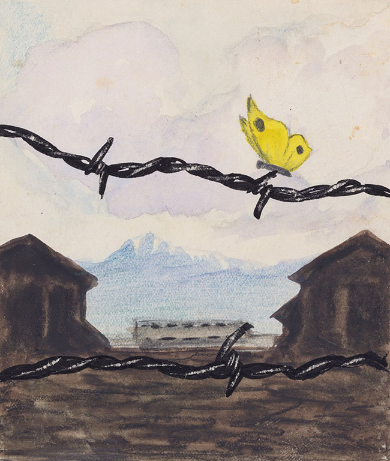
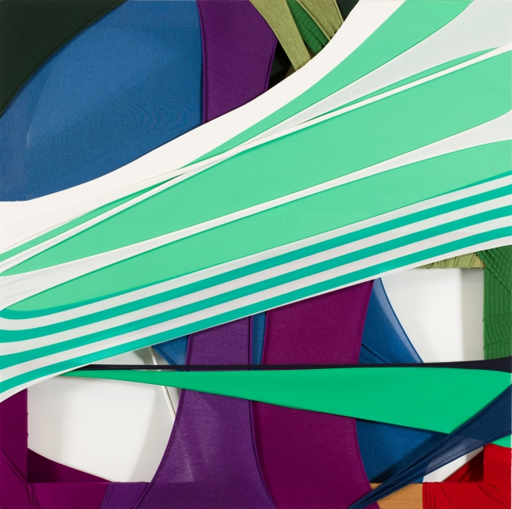

카를 로베르트 보덱, 커트 콘라드 로우. 어느 봄날
1961년 12월 15일, 이스라엘 법정은 아르헨티나에서 체포한 나치 전범 아이히만에게 교수형을 선고합니다. 그는 6백만 명의 유대인을 학살한 실무 총책임자였습니다. 이 그림을 남긴 보덱은 유대인이었으며, 1942년 아우슈비츠에서 사망했습니다. 가해자도, 피해자도 모두 사라지고 그림 속 수용소 철창의 나비만이 남았습니다.

Fabric Drawing-The Composition I|정다운
정다운의 작품은 각기 다른 색과 굵기의 천이 서로 얽히고 교차되어 만들어진다. 작가는 천을 이용해 캔버스뿐만 아니라 3차원의 공간을 형성하고, 그곳은 천이 만들어내는 리듬과 색으로 가득 채워진다. 화가들이 평면에 붓으로 그림을 그리는 것처럼, 정다운은 천으로 그림을 그리는 것이다. 작가의 작품은 어떤 정확한 이야기나 메시지를 담은 것이라기 보다, 작품을 만드는 방법과 과정, 재료 그 자체로 존재한다. 재료와 공간이 함께 쌓여 만들어진 작가의 자유로운 표현 자체가 작품의 목적이고, 공감과 상상은 오롯이 감상자의 몫이다.